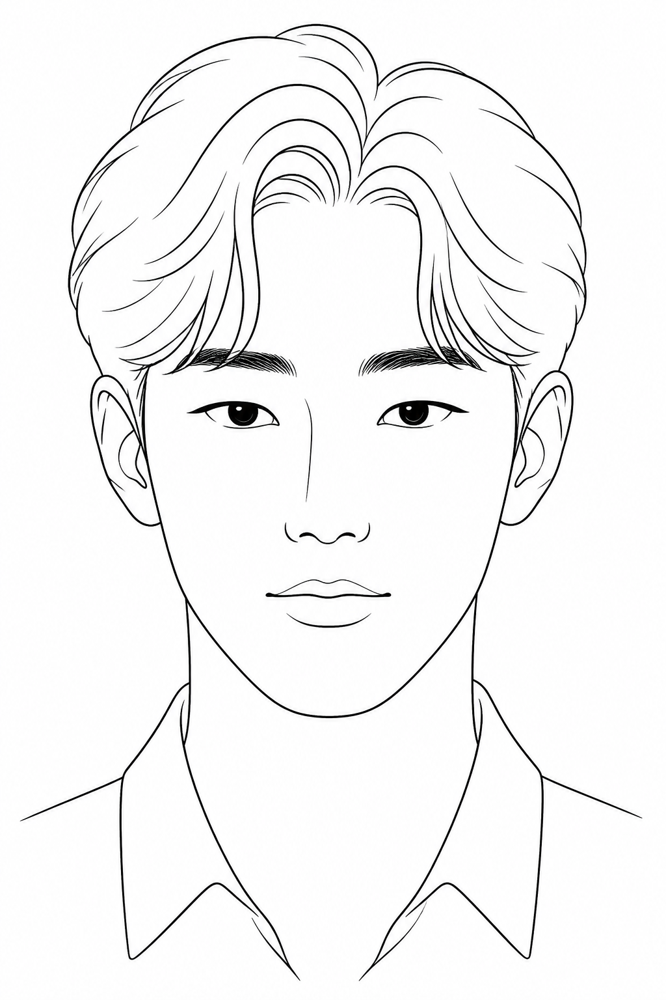

안면 미학 리포트
정면 단일 프레임 기준의 형태·비율 분석. 점수는 과장하지 않으며, 동아시아 남성 클린/소프트 미학을 기준으로 읽는다. 의학적 진단이 아니다.

상위권이지만 모델급은 아니다. 대칭과 피부가 점수를 끌어올리고, 연성 골격이 상한을 제한한다.
판정. 좌우 균형과 피부 질감은 분명히 강점이다. 그러나 광대·하관의 각이 약하고 중안부가 길어 얼굴이 둥글고 어려 보인다. “잘생긴 연성 미남”이지, 샤프한 골상미는 아니다.
세부 점수
Weighted 10-point scale좌우 대칭
눈·귀·구각의 수평 정렬이 높다. 정면 기준 가장 안정적인 축.
피부 질감
톤이 고르고 병변이 거의 없다. 전체 점수에서 가장 확실한 자산.
눈 형태
큰 아몬드형. 단안검 또는 속쌍꺼풀 추정. 간격은 비근 너비와 대체로 맞는다.
눈썹
진하고 직선에 가깝다. 인상을 온화하게 만들며, 꼬리는 살짝 처진다.
코 윤곽
비근 높이는 중간. 비첨이 둥글어 선명도가 한 단계 떨어진다.
입술 비
상:하 ≈ 1:1.5. 구각이 중립~미세 상승. 볼륨은 평균 상회.
골격
광대 돌출이 약하고 연부조직이 두껍다. 유년형 구조.
턱선
가장 약한 축. 각진 하관이 아니라 곡선 하관. 짧은 하안부와 결합.
비율과 구조
Morphometrics수직 삼등분
이상치는 상·중·하 1:1:1. 실제는 중안부가 가장 길고, 하안부가 짧다. 앞머리가 상안부를 가려 중안부 우위가 더 강조된다.
짧은 하안부는 어려 보이게 하지만, 동시에 얼굴 길이를 압축해 둥근 인상을 만든다.
가중 산출
대칭 20% · 피부 15% · 수직비율 15% · 골격 15% · 눈 12% · 하관 10% · 코 8% · 헤어 5%.
합성 7.8. 피부·대칭이 없다면 7.1 근처로 떨어진다. 반대로 하관을 7.5 이상으로 끌어올리면 전체는 8.1–8.3 구간이다.
얼굴형
타원~약한 둥근형. 하악각이 부드럽고 턱끝은 원형. 광대가 약해 중안부가 평평하게 읽힌다. 세로 길이보다 가로 볼륨이 먼저 보인다.
눈·코 관계
내안각 간격은 대략 한 눈 너비. 비근이 높지 않아 눈이 더 커 보인다. 이는 이점으로 남기되, 콧대를 과도하게 세우면 인상이 경직된다.
피부와 조명
정면 균일광에서 홍반·색소·여드름이 거의 없다. 유분 과다 광택도 약하다. 현재 피부 점수는 그루밍이 아니라 기반 품질에 가깝다.
강점 / 개선점
Unflattering, specific- 01 대칭정면 기준 수평축이 안정적이다. 매력 판단에서 가장 값비싼 요소를 이미 갖고 있다.
- 02 피부클리어한 톤이 연성 골격을 고급스럽게 만든다. 피부만 무너져도 점수는 즉시 하락한다.
- 03 눈크기와 간격이 좋다. 단안검이어도 처진 눈은 아니다. 시선이 또렷하다.
- 04 정돈감헤어·칼라·표정 모두 절제되어 있다. 과한 장식 없이 완성도가 나온다.
- 01 하관 선명도턱선이 곡선이다. 남성 골격미의 핵심이 비어 있어 전체 상한이 막힌다.
- 02 중안부 길이눈썹–비첨이 길어 얼굴이 조금 늘어져 보인다. 실제 나이보다 중안이 성숙해 읽힌다.
- 03 광대측광대가 약하다. 정면에서 입체감이 부족하고, 볼이 평평하다.
- 04 코끝비첨이 둥글다. 전체 이미지가 부드러워지는 대신 이목구비의 칼이 없다.
실행 권고
Grooming first. Surgery not indicated.헤어
- 옆·뒷머리 볼륨을 줄이는 테이퍼. 턱선이 보이게.
- 앞머리 무게를 1cm 정도 올려 상안부 노출.
- 가르마는 유지하되 더 또렷하게. 둥근 실루엣을 깨는 수직선이 필요.
- 과도한 리프 볼륨은 얼굴을 더 짧게 만든다. 높이 > 옆 부피.
눈썹 · 피부 · 하관
- 직선 눈썹 유지. 꼬리만 1–2mm 정리해 처짐을 줄일 것.
- 피부는 유지가 목표. SPF, 보습, 과도한 각질 제거 금지.
- 사진이라면 광대 위·하악각에만 아주 옅은 쉐딩. 볼 전체는 금지.
- 하관이 약하면 짧은 수염보다 깨끗한 면도가 낫다. 지금은 면도가 맞다.
스타일 · 자세
- 네이비/블랙 칼라 셔츠는 유효. 대비가 피부를 살린다.
- 라운드넥보다 셔츠, 블레이저, 직선 숄더.
- 카메라 아래 15° 앵글은 피할 것. 하관이 더 묻힌다.
- 체지방이 있다면 소폭 감량이 하관에 가장 싸다. 운동으로 목·승모 라인을 세울 것.
한 줄 전략
Do this, not that얼굴을 더 “예쁘게” 만들 필요는 없다. 이미 연성 미학의 강점이 있다. 점수를 올리는 유일한 경로는 하관을 보이게 하고, 중안부를 짧게 읽히게 하는 것이다. 옆머리 축소, 상안부 노출, 구조적인 옷, 정면·수평 촬영. 코·눈 시술은 현재 프레임에서 이득 대비 리스크가 크다.